How this was made
I wanted to tell the story of Apollo by rebuilding its icons in 3D and letting you turn them over in your own browser. Four subjects carry the whole programme: the Saturn V that left the pad, the Rocketdyne F-1 engines that did the lifting, and the Earth and Moon at either end of the journey. Every one was modelled from scratch in Blender, then brought to the web with three.js. Here is how each came together.
It started on paper
Before any of it touched a computer, each subject began as a pencil sketch — a way to settle the proportions, the camera angles, and what actually needed to be built.
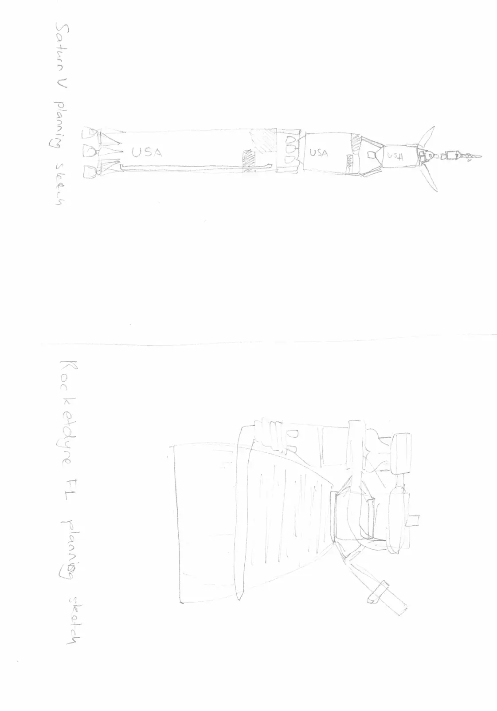
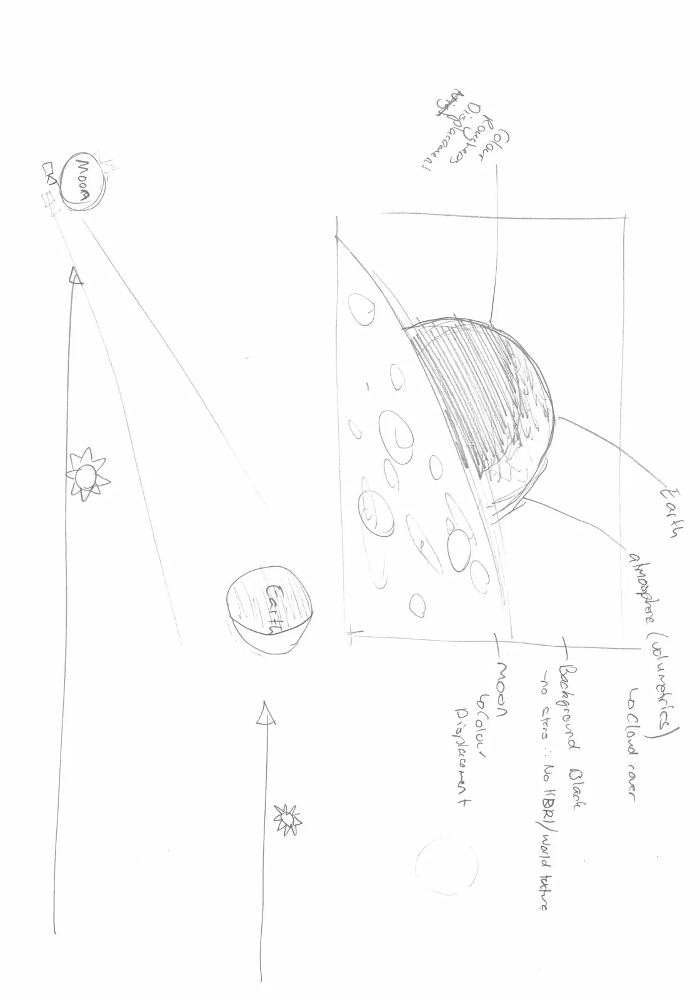
Building the Saturn V
Accuracy starts with good reference. I worked against a photograph of the real rocket on the pad and an orthographic side-on diagram, lined up so I could check the model's profile against the truth at every step.
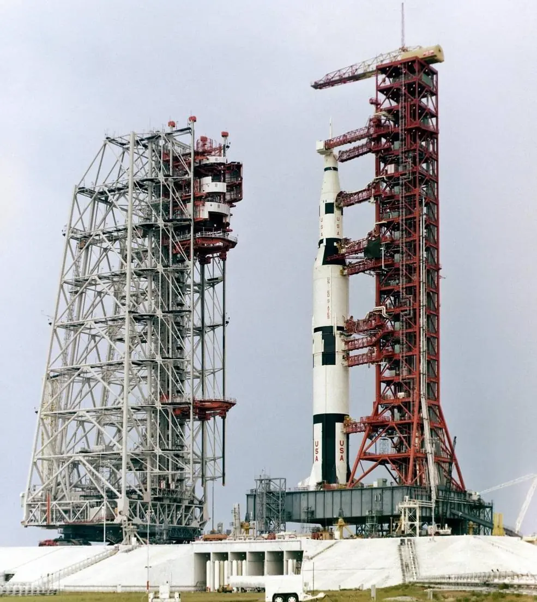
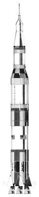
Almost every part grew from a single cylinder. A subdivision-surface modifier smoothed it, then I extruded and shaped it into fuel tanks and stages — creasing the edges I wanted to stay crisp. The fairing around the lunar module was built as one quarter-panel and spun around its centre four times to close the cone. The latticed launch tower came almost for free: a Wireframe modifier turns the edges of a simple boxy shape into a full steel truss. Materials stayed deliberately simple — just a colour, a roughness (shiny vs. matte), and a metallic switch kept at fully-on or fully-off, because no real material is half metal.
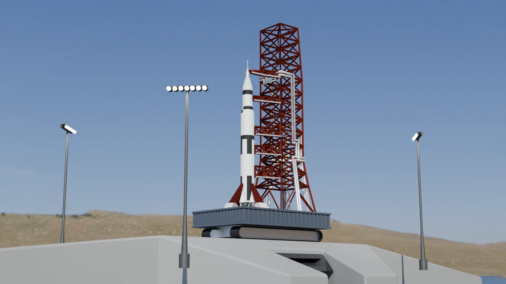
The F-1 engine
Five of these 8.5-tonne engines powered the Saturn V's first stage. Again I started from an orthographic illustration to keep the scale honest, then leaned on three modelling tricks — each simple on its own, but combined in complicated ways.
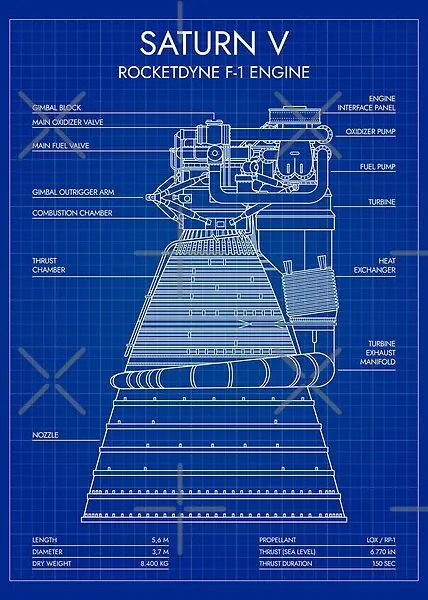
Smoothed primitives — basic shapes plus a subdivision-surface modifier and a few creased edges — gave me the big forms: the engine bell, combustion chamber, valves and pumps. Skinned paths handle every pipe and cable: a single point is extruded into a line that traces the route, then a Skin modifier wraps it in tubing and a second subdivision pass rounds it off. And radial modelling — building one wedge and arraying it around a centre — produced the gimbal arms, trusses, shock absorbers and the turbine.
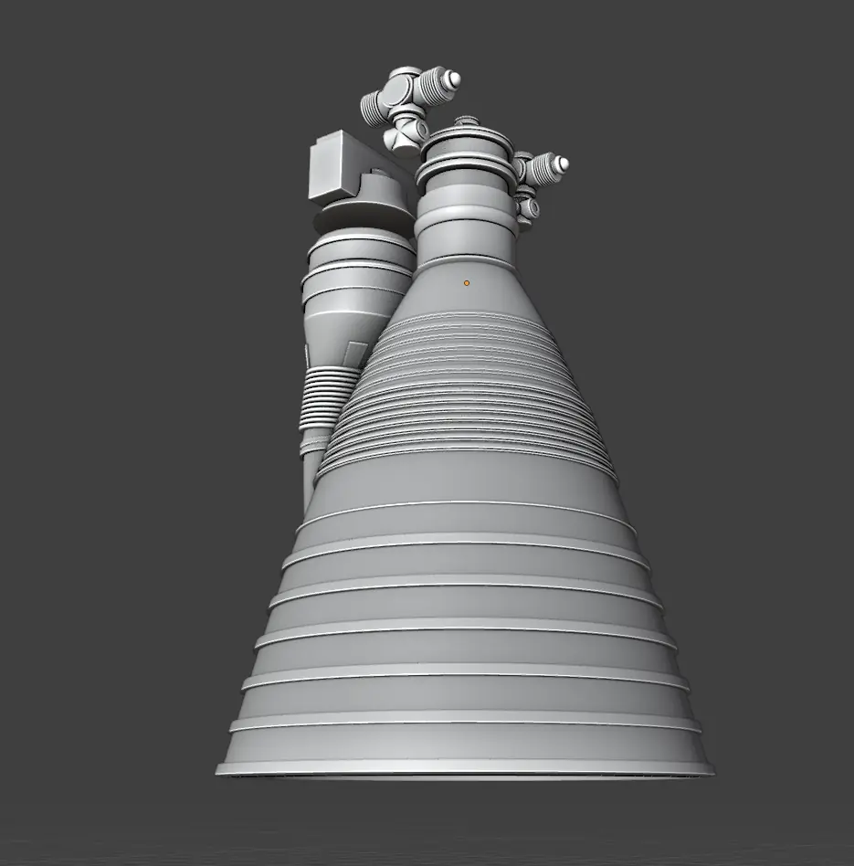
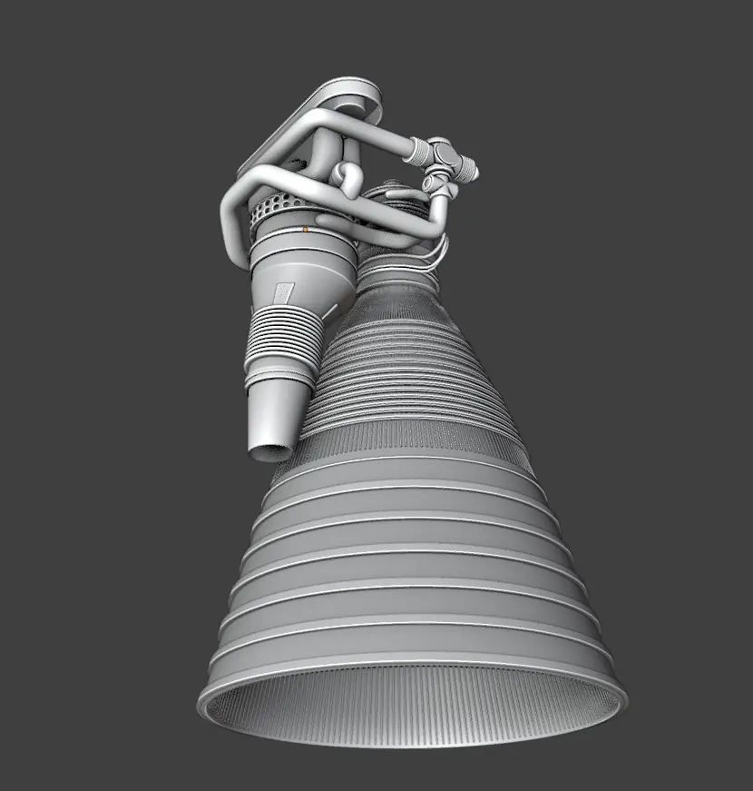
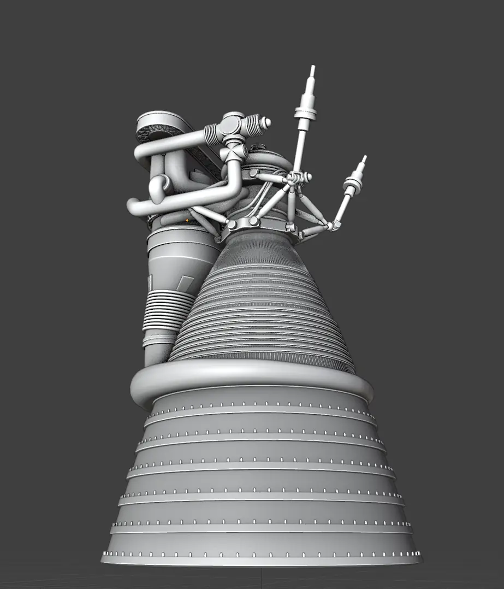
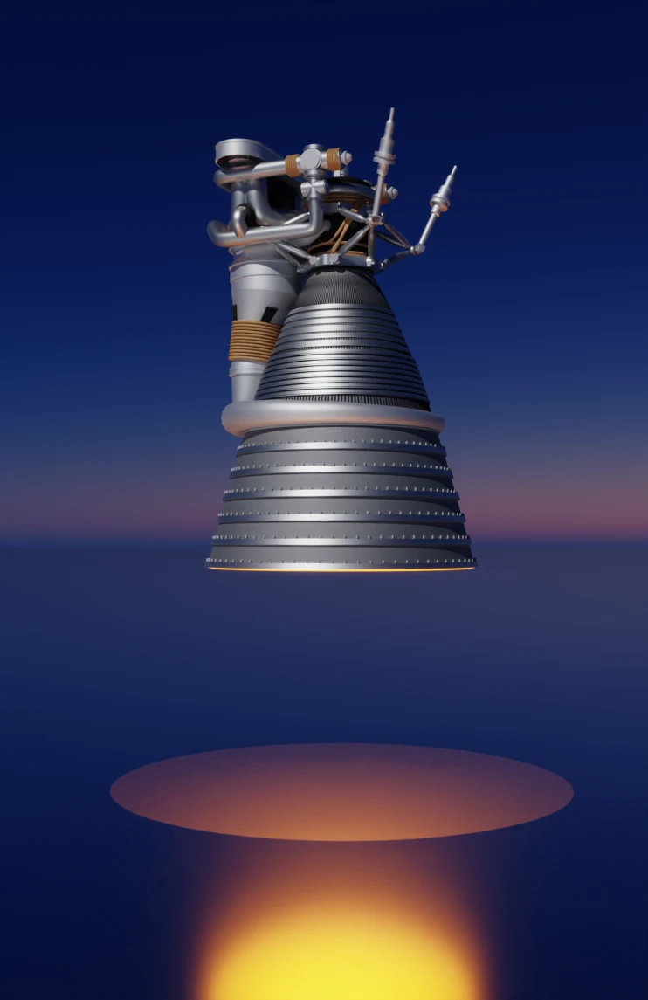
Earth & the Moon
Both planet and moon are built on real data — NASA surface scans gathered by probes and shuttle missions from the 1980s onward. The Moon is the simpler of the two: a finely-divided sphere with NASA's colour map and a bump map, the bump wired through a displacement node so it physically reshapes the surface into real craters rather than just faking the shadows. The world's background is set to a perfect black so it reads as space.
The Earth is layered. The surface combines a colour map, a displacement map for terrain, and an ocean mask that makes water matte and land reflective. Wrapped around it, a slightly larger shell becomes the atmosphere — its transparency driven by a Fresnel effect so it's clear overhead and thickens toward the horizon. A third, lower shell carries the clouds, using a black-and-white cloud image to mix between fully transparent and solid white.
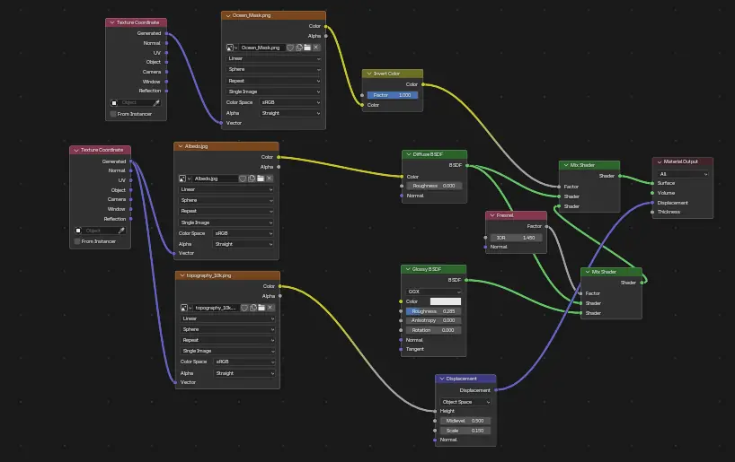
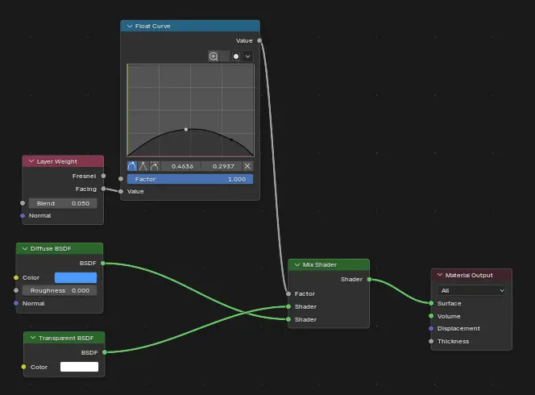
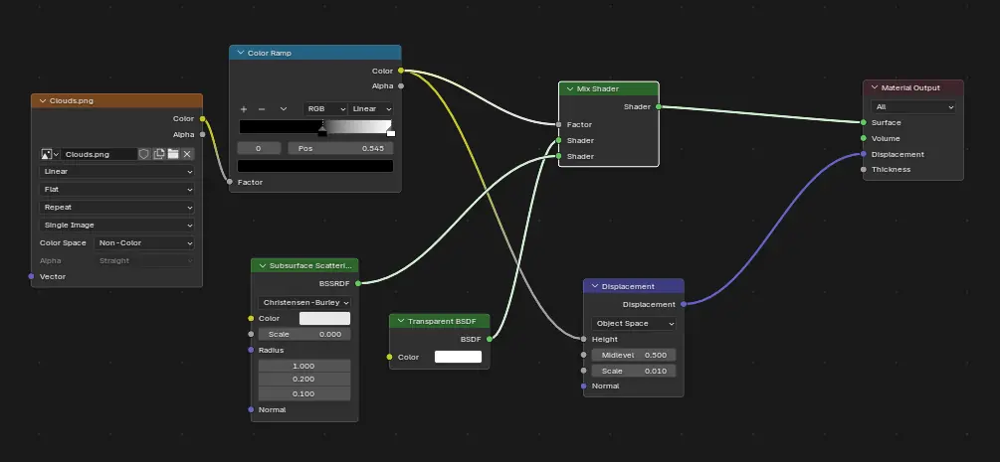
A single sun-style light — parallel rays, a faint yellow tint, roughly the 1000 watts of sunlight that reach Earth at any moment — lights the whole scene. These are some of the frames it produced:
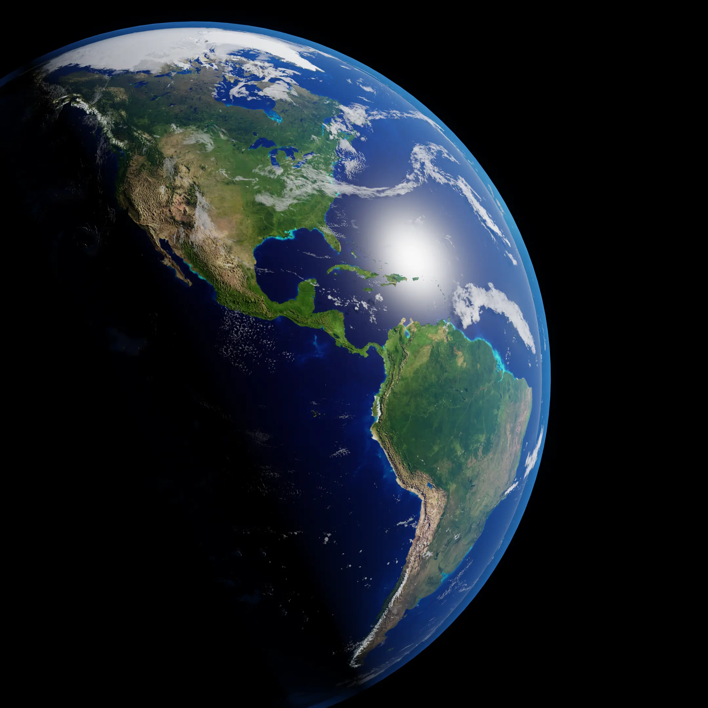
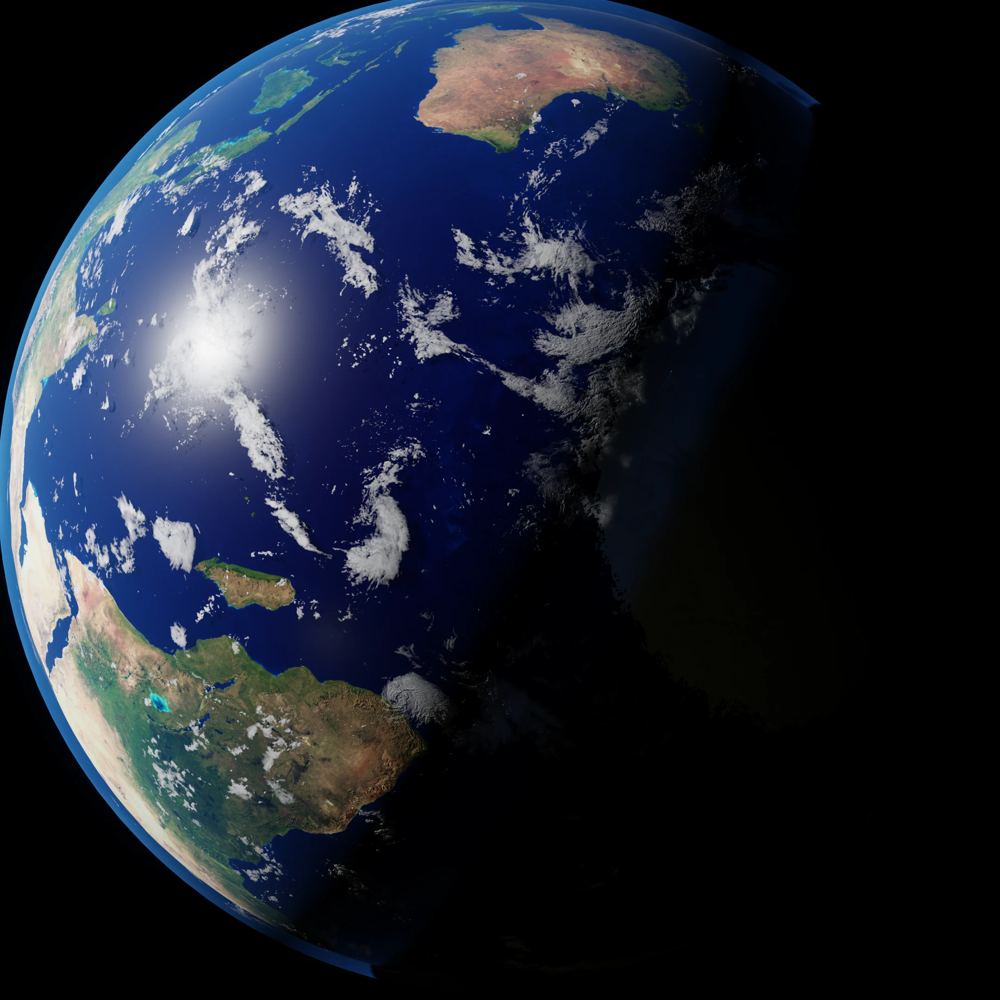

Bringing it to the web
The whole point was the interactive window — somewhere you could grab a model and inspect it. That turned out to be the hardest part. The big site-builders fought me: Squarespace paywalled the features I needed, and Webflow was tough to edit once generated. So I went the other way and built the site by hand in HTML, hosted free on GitHub Pages, with help from an AI coding assistant. The 3D runs on three.js, a library for showing models in the browser; each one is exported from Blender as a GLB file and dropped into the page over a drifting starfield.
Getting there meant some debugging. The launch complex first loaded zoomed too far out, so I added orbit-and-zoom controls. The F-1 engine arrived almost perfectly, apart from one material showing up bright red that needed correcting. The Earth was the real puzzle: its textures vanished on export, because a GLB can only carry standard materials and my Earth was painted with a custom shader stack the format couldn't bake in. The fix was to display a NASA-made Earth GLB with its textures already embedded — while every Earth image in the gallery is still a render straight from my own model.
What I took away
Rebuilding these machines was the best way to understand them — the lesser-known F-1 engine especially, whose story I only learned by modelling every pipe. I came away with a sharper feel for staying organised across hundreds of separate meshes, a healthy respect for the limits of 3D in a browser, and a quieter appreciation for the Earth itself: seen from orbit, with no borders, no cities and no lights — just a fragile blue world.